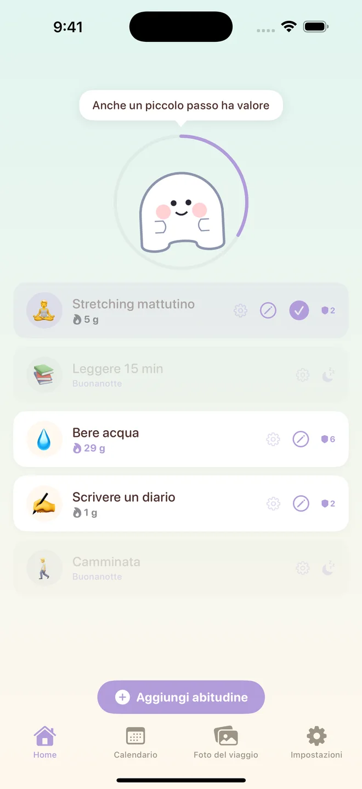
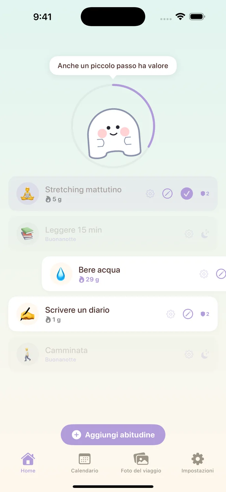
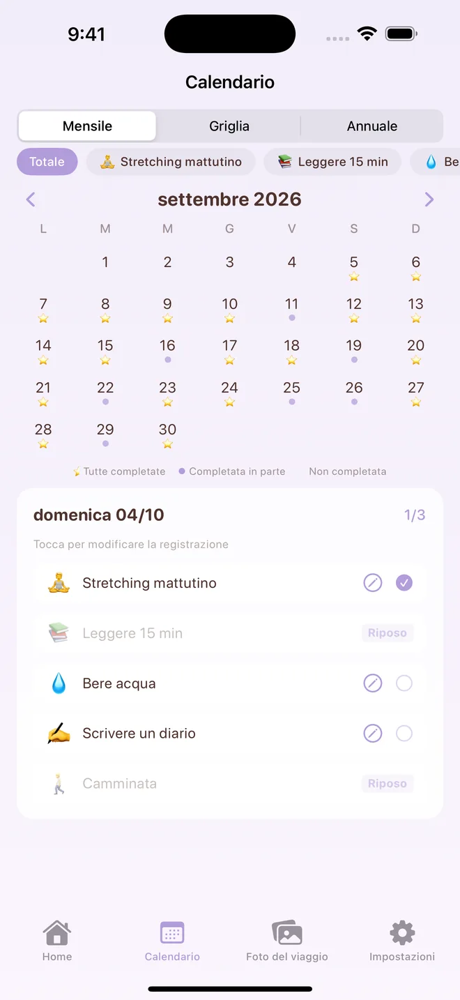

Oggi Marutto si sente fortunato! Non ho prove, però!
Un compagno chiacchierone. Abitudini più divertenti.
Trasforma le abitudini
in avventure.
Completa tutte le abitudini del giorno e ricevi una foto di viaggio. Marutto fa il tifo per te: scopri 250 foto, una piccola conquista alla volta.
iPhone e iPad / Gratis con pubblicità / Senza account
Ecco Marutto250foto di viaggio da collezionare


Oggi Marutto si sente fortunato! Non ho prove, però!
250foto di viaggio da scoprire
✓un gesto per segnare un successo
FREEgratis, senza account
MEET YOUR CHATTY LITTLE COMPANION
Un compagno chiacchierone.
Il piacere di ritrovarlo.
Ti fa i complimenti, ti incoraggia e ogni tanto ti strappa un sorriso. Marutto, la fata delle abitudini, accompagna ogni tuo piccolo passo. Chissà cosa racconterà oggi!
Wow! Hai fatto la tua lettura! Marutto è commosso!
Riposarsi non è una cosa cattiva. Parola di Marutto!
Le nuvole si appoggiano sulla cima del Fuji. È venuta voglia anche a me di mettermi un cappello.
Scegli un momento e scopri le chiacchiere di Marutto.
Esempi di messaggi presenti nell’app.
Un piccolo saluto a ogni visita.
Saluti che seguono l’ora del giorno e le stagioni. Piccoli pensieri che possono farti sorridere.
Ogni conquista merita un applauso.
Marutto festeggia con te anche i piccoli progressi, per rendere più piacevole il prossimo passo.
Dalla tua parte anche quando riposi.
Se la giornata non va come speravi, un incoraggiamento gentile per ricominciare al tuo ritmo.
01 — LITTLE BY LITTLE
Piccoli passi.
Un motivo in più per sorridere.
Un po’ di stretching, una pagina, un bicchiere d’acqua. Inizia dalle piccole cose: Marutto fa il tifo per te.
01

A SMALL STEP FORWARD
Un gesto per dire «Fatto!»,
con uno swipe.
Scorri per segnare un’abitudine come completata. Puoi anche annullare il completamento o modificare i progressi passati dal calendario.
Tocca per una piccola conquista
Demo del sito
Nei giorni in cui ti impegni e in quelli in cui le cose non vanno come speravi, Marutto è qui per incoraggiarti.
EVERY LITTLE DAY COUNTS
Ogni giorno che perseveri,
rafforza la fiducia in te.
Ripercorri i tuoi piccoli passi con il calendario mensile, la griglia per abitudine e il riepilogo annuale. Puoi anche aggiungere note a ogni abitudine.
02

02 — A WORLD OF LITTLE REWARDS
Abitudini quotidiane.
Un mondo da scoprire.
250✦
foto di viaggio da collezionare


Coltiva le tue abitudini, colleziona ricordi.
Quando completi tutte le abitudini della giornata, ricevi una foto di viaggio. Scopri 250 foto, i diari di viaggio e le curiosità di Marutto. Puoi anche ottenere foto bonus guardando un annuncio video.
Condividi foto e diari di viaggio
Ingrandisci la foto che preferisci e tocca il pulsante di condivisione per inviare foto e diario. Puoi includere anche il link dell’app e #MaruttoTracker.
03 — AT YOUR OWN PACE
Abitudini che seguono il tuo ritmo.
Adatta l’app alle tue abitudini quotidiane
Imposta i giorni in cui svolgere le abitudini, i promemoria e l’ora in cui inizia un nuovo giorno. Puoi controllare i progressi di oggi anche dal widget nella schermata Home.
Proteggi la tua serie con gli scudi
Dopo 7 giorni consecutivi ottieni uno scudo. Puoi attivare o disattivare nelle impostazioni la funzione che protegge la serie se ti capita di dimenticare un giorno.
Disponibile in 18 lingue e impostazioni locali
Usa la lingua che preferisci per le schermate, le battute di Marutto e i diari di viaggio.
L’app è gratuita?
Puoi scaricare e usare l’app gratuitamente. Include pubblicità e video facoltativi per ricevere foto di viaggio extra.
Serve un account?
Non serve un account. I tuoi dati sulle abitudini vengono salvati sul dispositivo. Per iPhone e iPad con iOS 17 o successivo.